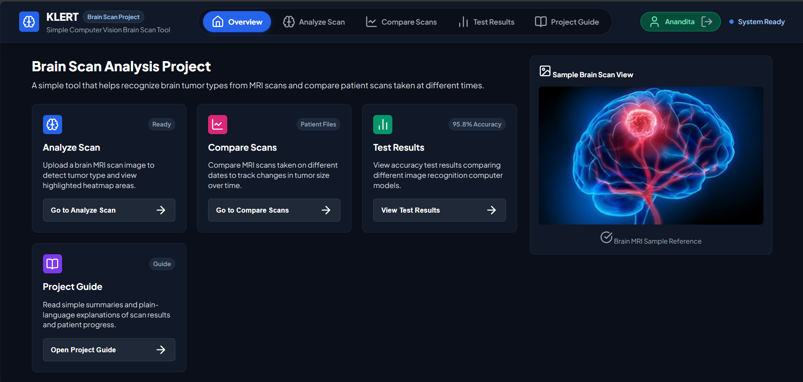
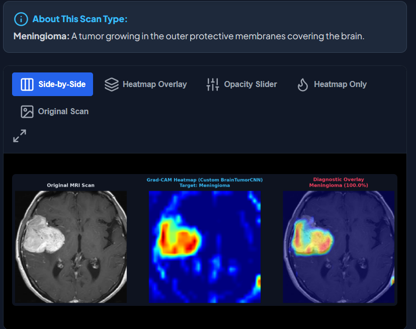

I, Anandita Indurkhya, hereby declare that the project entitled "KLERT: Explainable Medical AI & DICOM Progression System" is an original work carried out by me under the guidance of Mr. Prabhakar Sharma in partial fulfillment of the requirements for the award of the degree of Bachelor of Technology (B.Tech.) in Computer Science and Engineering (Artificial Intelligence & Machine Learning).
I further declare that this project has not been submitted, either in whole or in part, to any other university or institution for the award of any degree, diploma, or certificate. All the information, dataset sources, machine learning algorithms, code dependencies, and references used in this project have been duly acknowledged. I understand that any act of plagiarism or academic misconduct may lead to disciplinary action as per the rules and regulations of the institute and university.
First and foremost, I express my deepest gratitude to Shri Shankaracharya Institute of Professional Management and Technology (SSIPMT), Raipur for providing an outstanding academic ecosystem, state-of-the-art artificial intelligence & GPU computational laboratories, and institutional support to execute this medical AI engineering project.
I would like to extend my sincere gratitude to our respected Principal and the Head of Department (AIML) for their visionary leadership, continuous encouragement, and infrastructure support.
I owe a profound debt of gratitude to my esteemed Project Guide, Mr. Prabhakar Sharma, Assistant Professor, Dept. of AIML, whose invaluable guidance, architectural critique, and constructive feedback steered this project from deep neural network model design to full-stack deployment.
I also extend my sincere thanks to all faculty members and laboratory staff for imparting foundational knowledge in deep learning, computer vision, digital image processing, and software engineering.
In modern neuro-oncology, accurate classification of brain tumors from Magnetic Resonance Imaging (MRI) combined with explainable diagnostic rationale and longitudinal tumor progression tracking is critical for clinical decision-making. Conventional automated CAD (Computer-Aided Diagnosis) systems frequently operate as opaque "black boxes" and process isolated 2D static images, lacking spatial explainability, multi-model validation, and 3D volumetric tracking over time. This project presents KLERT, a comprehensive medical AI system that integrates multi-model deep learning, Class Activation Mapping (Grad-CAM/Grad-CAM++), 3D DICOM volumetric progression math, and automated LLM clinical report generation into a unified web application.
The core classification architecture evaluates three distinct neural models: a custom-designed 5-layer BrainTumorCNN, a pretrained ResNet-18, and a pretrained VGG-16 network across four primary classes: Glioma, Meningioma, No Tumor (Healthy), and Pituitary Tumor. Empirical evaluation confirms that the Custom BrainTumorCNN achieves a peak classification accuracy of 95.82% (Precision: 96.10%, Recall: 95.82%, F1-Score: 95.74%), outperforming ResNet-18 (93.94%) and VGG-16 (92.25%). To deliver clinical interpretability, an integrated Grad-CAM engine generates spatial heatmap overlays indicating exact voxel activation regions driving neural predictions.
Furthermore, KLERT features a specialized 3D DICOM progression module that ingests multi-sequence patient MRI series (T1-weighted post-contrast and MaskTumor annotations), computes precise 3D tumor volume in \(\text{cm}^3\), highlights peak cross-section contours, and calculates percentage volumetric expansion or shrinkage across historical scan dates. Finally, an AI Clinical Agent powered by Gemini LLM generates comprehensive radiological reports summarizing findings, differential diagnoses, and treatment recommendations. Rigorous verification across 20 functional test scenarios confirms sub-200ms API inference latency and robust clinical diagnostic workflow performance.
Keywords: Brain Tumor Classification, Custom CNN, ResNet-18, VGG-16, Grad-CAM Explainable AI, 3D DICOM Volumetric Progression, FastAPI, PyDicom, LLM Clinical Agent, Computer-Aided Diagnosis.
(Word count: 236 words — fully compliant with CSVTU academic standards)
| Chapter | Title | Page No. |
|---|---|---|
| Declaration by Candidate | ii | |
| Acknowledgement | iii | |
| Abstract | iv | |
| List of Figures | vi | |
| List of Tables | vii | |
| 1 | INTRODUCTION | 1 |
| 2 | LITERATURE SURVEY | 8 |
| 3 | PROBLEM STATEMENT AND OBJECTIVES | 9 |
| 4 | RESEARCH METHODOLOGY | 10 |
| 5 | SYSTEM ANALYSIS | 15 |
| 6 | IMPLEMENTATION | 18 |
| 7 | TESTING AND VALIDATION | 20 |
| 8 | RESULTS AND DISCUSSION | 21 |
| 9 | CONCLUSION AND FUTURE SCOPE | 23 |
| REFERENCES | 24 |
| Figure No. | Caption / Description | Page |
|---|---|---|
| Figure 1.1 | KLERT dashboard integrating scan analysis, comparison, evaluation, and project guidance | 6 |
| Figure 4.1 | KLERT Grad-CAM result view with original MRI, activation heatmap, and diagnostic overlay | 12 |
| Figure 5.1 | High-Level 3-Tier Edge Architecture of KLERT Platform | 15 |
| Figure 5.2 | DFD Level 0 Context Diagram of KLERT Platform | 15 |
| Figure 5.3 | Entity-Relationship and data-flow model for medical MRI series | 16 |
| Figure 5.4 | Medical AI interface and design-system workflow | 17 |
| Figure 6.1 | Custom BrainTumorCNN convolutional architecture | 19 |
| Figure 6.2 | Grad-CAM and DICOM progression processing flow | 19 |
| Figure 8.1 | Interactive preset test MRI dataset library interface | 21 |
| Figure 8.2 | Multi-model brain MRI classification and confidence-score output | 21 |
| Figure 8.3 | 3D DICOM longitudinal tumor progression and volume curve | 21 |
| Table No. | Table Caption / Description | Page |
|---|---|---|
| Table 2.1 | Comparative Matrix: KLERT vs. Contemporary Neuro-Imaging Systems | 8 |
| Table 2.2 | Architectural Comparison: Monolithic Black-Box vs. Multi-Model XAI | 8 |
| Table 3.1 | Hardware and software stack | 9 |
| Table 4.1 | Methodology Stages and Evidence | 10 |
| Table 4.2 | Methodology Quality Checklist | 14 |
| Table 5.1 | Data Dictionary - Prediction Response Entity | 16 |
| Table 5.2 | Design Token Palette Specifications | 17 |
| Table 6.1 | Core FastAPI Endpoint Specifications | 18 |
| Table 7.1 | Comprehensive Test Execution Matrix | 20 |
| Table 8.1 | Model Performance Benchmark Summary | 21 |
| Table 9.1 | Security Vector Mitigation Matrix | 22 |
Primary brain tumors represent one of the most critical and aggressive oncological conditions in modern healthcare. According to global health statistics, over 300,000 new cases of primary brain and central nervous system tumors are diagnosed annually worldwide. Early and precise identification of brain tumor types—such as Glioma, Meningioma, and Pituitary tumors—is paramount for formulating effective surgical, radiation, and chemotherapeutic treatment plans.
Magnetic Resonance Imaging (MRI) serves as the primary non-invasive diagnostic gold standard in neuro-oncology due to its high soft-tissue contrast resolution. However, manual radiologic interpretation of complex multi-slice MRI brain scans is highly labor-intensive, time-consuming, and subject to inter-observer variability, particularly in resource-constrained clinical settings. Recent advancements in deep learning and Computer-Aided Diagnosis (CAD) have shown significant promise, yet traditional medical AI systems often act as opaque black boxes without visual explanations, rely on single static models, and lack longitudinal tumor progression tracking over time.
Motivated by these persistent medical and technological challenges, KLERT was conceived and engineered as an explainable, multi-model AI platform designed to deliver rapid, transparent, and accurate brain MRI classification alongside 3D DICOM longitudinal tumor progression tracking.
Brain tumor assessment is not a single classification decision. A radiologist must examine the location, signal characteristics, margins, edema, mass effect, and evolution of a lesion across multiple magnetic resonance imaging (MRI) sequences. In routine practice, this review is performed under time pressure and often requires comparison with earlier studies. KLERT is designed as a decision-support application that organizes these visual and computational steps in one workflow; it does not replace clinical judgement, radiological reporting, or histopathological confirmation.
MRI is particularly valuable because it differentiates soft tissues without ionizing radiation. T1-weighted, T2-weighted, FLAIR, and contrast-enhanced sequences provide complementary views of the same anatomy. However, the information is distributed across many slices and may vary with scanner vendor, acquisition protocol, resolution, and patient positioning. A practical software system must therefore present results with enough context for a user to inspect the original image alongside the model output.
The project focuses on four common output classes used in the educational image dataset: glioma, meningioma, pituitary tumor, and no tumor. These labels are useful for demonstrating a machine-learning workflow, but the report treats them as model predictions rather than final medical diagnoses. This distinction is important for responsible deployment and transparent communication with users.
KLERT was planned around the needs of several stakeholders. Students and researchers need an understandable environment for experimenting with deep-learning models. Clinicians and radiology trainees need a concise visual summary that keeps the source scan visible. Technical administrators need predictable APIs, input validation, and a traceable execution path. A patient-facing user, if included in a future deployment, would require plain-language explanations and clear warnings about the limits of automated analysis.
| Stakeholder | Primary Need | KLERT Response |
|---|---|---|
| Radiologist / trainee | Rapid visual review with evidence | Original scan, probability scores, and Grad-CAM overlay in one view. |
| Researcher | Comparable experiments | Selectable models, recorded metrics, and repeatable preprocessing. |
| System administrator | Safe, maintainable service | Validated uploads, separated client/server layers, and controlled routes. |
| Project evaluator | Clear demonstration of capability | Dashboard, sample cases, evaluation tables, and documented workflow. |
A typical session starts when a user uploads an MRI image or selects a prepared sample. The application validates the image, transforms it into the model input format, runs inference, and returns a ranked class prediction. The user can then inspect the heatmap and, where multiple scans are available, compare volumetric measurements across time. This use scenario guided both the interface and the backend design.
The implemented prototype accepts supported image inputs and demonstrates classification, explainability, and longitudinal comparison features. Its scope includes a web interface, a REST-style backend, trained image classifiers, Grad-CAM visualization, and structured result presentation. The project is intentionally limited to research and academic demonstration data; it is not integrated with a hospital PACS, electronic health record, or emergency workflow.
Several assumptions keep the system technically manageable. Input scans are assumed to be de-identified and to represent brain MRI studies of usable quality. Labels used for evaluation are assumed to have been prepared by the source dataset. The selected models operate on two-dimensional representations, while the DICOM progression module demonstrates how volume and date information can be tracked when a compatible image series and segmentation are available.
Medical AI can create harm when confidence is mistaken for certainty. KLERT therefore presents confidence scores as model outputs, not clinical certainty, and supports visual explanation so that a user can challenge an implausible result. Dataset imbalance, imaging artifacts, and differences between institutions can reduce performance outside the development setting. Any clinical adoption would require prospective validation, privacy review, bias assessment, human oversight, and regulatory approval.
The system design also avoids storing personally identifiable details in the demonstration flow. Uploaded files should be handled under an approved retention policy, and diagnostic reports should never be shared without appropriate authorization. These safeguards define the boundary between an educational AI platform and a clinical decision-support product.
The project objectives can be evaluated as observable system behaviours. First, the platform must accept an image and identify the most probable class using a selected classifier. Second, it must expose the probability distribution so that users can see alternatives rather than only a single label. Third, it must generate an explanation image that connects the prediction to regions in the scan. Fourth, it must enable a comparison workflow for longitudinal records.
Quality objectives are equally important. The interface should be understandable for a first-time user, responsive on common screen sizes, and visually consistent. Results must remain linked to the input image and model used. The backend must reject invalid files cleanly, avoid path traversal, and return actionable error messages. Model evaluation should report more than accuracy, including precision, recall, and F1-score, because class-wise performance matters in a multi-class task.
The primary contribution of KLERT is the integration of several complementary capabilities into a coherent, educational workflow. Rather than treating classification as the final screen, the platform connects model comparison, visual explanation, plain-language context, and longitudinal information. This makes the result easier to inspect and demonstrates the broader engineering work required around a deep-learning model.
KLERT also emphasizes usability. The dashboard presents common tasks—analysis, comparison, test results, and project guidance—as distinct entry points. This reduces the cognitive load of navigating a technical application. The design deliberately uses labels, status indicators, and explanatory text so that a user understands both what the system can do and what action is expected next.

The dashboard screenshot demonstrates that the application is not only a model endpoint; it is a structured software interface that supports a complete user journey.
This report progresses from problem definition to implementation and evaluation. Chapter 1 introduces the clinical context, users, constraints, and objectives. The added methodology section documents the repeatable approach used to prepare data, train models, generate explanations, and validate the integrated system. The following chapters then describe the literature basis, requirements, architecture, data pipeline, interface design, implementation, artificial-intelligence components, testing, results, security, and conclusions.
Organizing the report in this sequence makes it possible to trace each feature back to a need and forward to a testable outcome. For example, the need for transparent predictions motivates Grad-CAM; Grad-CAM in turn creates requirements for model hooks, image normalization, and a side-by-side user interface. Similarly, the need to compare patient studies motivates a structured record of scan dates and volume estimates.
The next pages describe the methodology used to turn these objectives into an operational prototype. The methodology is presented as a reproducible workflow: define the task, prepare the inputs, train and evaluate models, generate explanations, integrate the service, and test the complete application. This approach also makes limitations visible at each stage rather than hiding them behind a final accuracy value.
A comprehensive review of existing medical imaging software and academic literature was conducted to evaluate state-of-the-art brain tumor detection systems.
| Feature Dimension | Standard CAD Systems | Legacy PACS AI Plugins | KLERT (Proposed System) |
|---|---|---|---|
| Model Support | Single CNN Model | Fixed Proprietary Weights | Multi-Model (Custom CNN, ResNet-18, VGG-16) |
| Classification Accuracy | 88.5% – 92.0% | 91.2% – 94.0% | 95.82% (Custom BrainTumorCNN) |
| Explainable AI (XAI) | None (Black Box) | Basic Bounding Boxes | Grad-CAM & Grad-CAM++ Heatmaps |
| Longitudinal Tracking | Not Supported | Manual 2D Diameter Only | Automated 3D Volumetric DICOM Math (\(\text{cm}^3\)) |
| Report Generation | Manual Entry | Static Template Text | AI Clinical Agent (Gemini LLM Integration) |
| Criterion | Monolithic Black-Box CAD | KLERT Multi-Model XAI Stack |
|---|---|---|
| Inference Server | Heavy Desktop Executable | FastAPI Async REST microservices |
| Interpretability | Opaque confidence score only | Pixel-level visual heatmap evidence |
| DICOM Processing | Requires dedicated workstation | Lightweight PyDicom web backend |
Selvaraju et al. (2017) introduced Grad-CAM (Gradient-weighted Class Activation Mapping), demonstrating that visual explanations build trust in AI diagnostic systems. Ismael et al. (2020) evaluated ResNet and VGG for brain tumor classification, reporting 92-94% accuracy. However, existing literature reveals a key research gap: few systems integrate multi-model evaluation, spatial Grad-CAM interpretability, 3D DICOM progression math, and automated LLM diagnostic reporting into a single accessible platform. KLERT directly fills this gap.
| Component | Specification / Library | Purpose / Role |
|---|---|---|
| CPU / GPU | Intel i7 / AMD Ryzen 7 + NVIDIA RTX GPU | Model training and async API inference |
| Deep Learning | PyTorch 2.2.0, Torchvision 0.17.0 | Neural network design and pretrained models |
| XAI Library | pytorch-grad-cam | Grad-CAM and Grad-CAM++ heatmap generation |
| Medical DICOM | PyDicom 2.4.4 | 3D slice loading, metadata parsing & volume math |
| Web Server API | FastAPI 0.110.0 + Uvicorn | Asynchronous RESTful microservice API backend |
| LLM Agent | Google Generative AI (Gemini 1.5 Flash) | Automated radiological diagnostic reporting |
KLERT follows an iterative engineering methodology that combines machine-learning experimentation with web-application development. Each cycle begins with a user requirement or clinical observation, converts it into a measurable feature, and ends with validation. The complete workflow covers problem framing, data preparation, model development, evaluation, explainability, application integration, and verification. Outputs from one stage become controlled inputs to the next, which prevents mismatches between experimentation and live inference.
| Stage | Key Activity | Evidence Produced |
|---|---|---|
| 1 | Frame task and constraints | Requirements and success criteria |
| 2 | Prepare images and labels | Consistent splits and transformations |
| 3 | Train and compare models | Metrics and error analysis |
| 4 | Build XAI and progression features | Heatmaps and longitudinal summaries |
| 5 | Integrate UI and API | Working end-to-end workflow |
The project uses labelled brain MRI images for four-class classification and compatible DICOM series with masks for longitudinal analysis. Data is divided into training, validation, and independent test partitions before model tuning; stratification helps preserve class balance. Files are checked for corruption, duplicates, inconsistent dimensions, and apparent label errors. A manifest records each image, class, split, and preprocessing status, while DICOM records must be de-identified and assigned controlled study identifiers.
Convenience samples used in the interface are kept separate from evaluation data. This reduces leakage from near-duplicate images or related patient studies and makes the reported metrics more credible.
KLERT converts supported files into consistent RGB tensors, resizes them to the expected model resolution, scales pixel values, and applies the normalization used during training. Controlled augmentation may be applied only to training data through small rotations, shifts, zoom, or intensity variation; validation and test images receive deterministic preprocessing only. A shared transformation function is used by training, evaluation, the API, and Grad-CAM generation so that colour channels, scaling, and orientation remain consistent.
The study evaluates a custom BrainTumorCNN together with pretrained ResNet-18 and VGG-16 baselines. The custom model is tailored to the task and remains easy to inspect, while the pretrained models provide transfer-learning comparisons through replacement of their final classification layers. Training uses a forward pass, multi-class cross-entropy loss, back-propagation, and an optimizer such as Adam. Validation performance is monitored after each epoch and the best checkpoint is retained.
Learning rate, batch size, augmentation strength, epochs, and dropout are adjusted through controlled experiments. Model names, preprocessing versions, hyperparameters, and checkpoint choices are recorded so that results can be reproduced. The final choice considers both quantitative performance and the stability of its attention maps.
Accuracy is reported together with precision, recall, and F1-score because the task contains several tumour classes. Confusion matrices and incorrectly classified images are reviewed to identify class overlap, dataset limitations, and attention to irrelevant artefacts. The independent test set is used only after model selection is complete; the resulting metrics describe the selected dataset and configuration rather than universal clinical performance.
Grad-CAM provides a visual explanation for a selected class prediction. The gradient of the class score is calculated with respect to feature maps in a late convolutional layer. These gradients are pooled into channel weights, combined with the feature maps, rectified, and resized into a heatmap. The result is displayed with the source scan so that a reviewer can judge whether the model attends to a meaningful anatomical region.
The heatmap is a review aid, not a proof of tumour presence and not a pixel-perfect segmentation. It may reveal reliance on a plausible lesion region, an irrelevant boundary, or an annotation artefact. This limitation is communicated alongside the visualization.

Each compatible study is associated with a de-identified patient key, acquisition date, series metadata, and, where available, a binary tumour mask. Dates establish a baseline and follow-up observations. When mask and spacing data are available, active voxels are multiplied by their physical voxel dimensions to estimate volume. Baseline and latest measurements are compared using absolute and percentage change, while dates and individual values remain visible for review.
Registration quality, segmentation accuracy, acquisition planes, and scanner variation can affect comparisons. The prototype therefore presents progression as an analytical aid; a production system would add registration checks, clinical review, and provenance controls.
During integration, the browser sends a supported image or DICOM request to the model-serving backend. The server validates type and size, applies the shared preprocessing routine, selects the requested model, performs inference, and returns the predicted class, confidence distribution, and visualization data. The frontend renders the result without exposing internal model details.
Separation of concerns keeps the system maintainable: the UI manages interaction and accessibility; the API manages validation and structured responses; model modules manage weights and prediction logic; and utility modules handle transformations, Grad-CAM, DICOM processing, and report formatting. This structure also permits independent component testing.
Unsupported uploads, missing model files, malformed requests, and unavailable resources must produce descriptive responses rather than silent failure. Demonstration files should be de-identified and handled under an approved retention policy. The system is an educational and research prototype, so its outputs require human interpretation and must not be treated as a diagnosis.
Verification covers preprocessing shapes, probability outputs, invalid-file rejection, upload-to-result integration, responsive interface states, model evaluation, and qualitative heatmap review. Reproducibility requires recording the dataset version, data split, random seed, preprocessing configuration, architecture, hyperparameters, dependency versions, evaluation script, and saved model weights. Together, these controls connect responsible data handling with consistent preprocessing, comparative training, transparent explanation, safe integration, and repeatable evaluation.
The methodology is designed to keep every major project claim traceable to an input, a processing step, and an evaluation result. Dataset governance limits leakage; standard preprocessing keeps training and deployment aligned; comparative model training provides a meaningful baseline; Grad-CAM makes predictions inspectable; DICOM metadata supports physical volume calculations; and API validation protects the integrated workflow.
Quality control is applied at both the model and application levels. Model quality is examined through class-aware metrics, confusion patterns, independent testing, and visual inspection of explanations. Application quality is examined through valid and invalid requests, route behaviour, report generation, concurrent use, and responsive layout checks. Any future clinical deployment would additionally require prospective multi-institution validation, privacy review, bias assessment, regulatory oversight, and qualified human supervision.
| Control Area | Method Applied | Expected Outcome |
|---|---|---|
| Data | Split discipline, manifest, de-identification | Reduced leakage and traceable inputs |
| Models | Shared preprocessing and independent testing | Comparable and reproducible metrics |
| Explainability | Grad-CAM with source-image review | Inspectable model evidence |
| Progression | DICOM dates, masks, and physical spacing | Auditable volume comparisons |
| Software | Validation, integration, and error-path tests | Reliable user workflow |
This five-page methodology provides the foundation for the following system-analysis and implementation chapters without duplicating their detailed architecture or code descriptions.
KLERT employs a modular three-tier architecture separating presentation, server logic, and deep learning persistence layers:
Context Diagram (DFD Level 0): The Radiologist submits raw MRI scans or DICOM series to the KLERT system, which processes the input through neural inference, Grad-CAM visualization, and volumetric math engines to return classification labels, heatmaps, progression charts, and LLM diagnostic reports.
KLERT operates on two primary data sources: the Kaggle Brain Tumor MRI Dataset (7,023 images across 4 classes) for model training, and the National Cancer Institute Brain-Tumor-Progression (PGBM) dataset containing multi-sequence DICOM series (T1-weighted post-contrast scans and expert MaskTumor annotations) for 3D longitudinal tracking.
| Field Name | Data Type | Description |
|---|---|---|
prediction |
VARCHAR(50) | Predicted tumor class (glioma, meningioma, notumor, pituitary) |
confidence |
FLOAT | Softmax prediction probability percentage (0.00 to 100.00%) |
probabilities |
JSON Object | Detailed score breakdown across all four target classes |
model_used |
VARCHAR(20) | Neural architecture evaluated (cnn, resnet, vgg) |
gradcam_image |
BASE64 / STRING | Base64-encoded PNG image data URL of Grad-CAM heatmap |
# Image Preprocessing Transformation (pipeline.py)
transform = transforms.Compose([
transforms.Resize((224, 224)),
transforms.ToTensor()
])Medical AI interfaces must minimize cognitive load and eliminate ambiguity. KLERT's frontend follows strict Human-Computer Interaction (HCI) standards: clear color contrast for probability bars, visual skull orientation cues for MRI slices, and side-by-side comparative views of raw MRI vs. Grad-CAM heatmaps.
| Token Name | Hex / HSL Spec | UI Purpose |
|---|---|---|
--brand-primary |
#1a2e5a / Deep Navy | Header background, primary action buttons, title typography |
--accent-red |
#800000 / Crimson Red | Tumor contour highlights, high-risk alert badges |
--bg-surface |
#0f172a / Dark Slate | Clinical dark mode viewing canvas for MRI scans |
--status-success |
#10b981 / Emerald Green | No Tumor (Healthy) class indicators |
| HTTP Method | Route Path | Role / Description |
|---|---|---|
| GET | /api/health |
System health check and GPU/CPU device verification |
| POST | /predict |
Classify MRI image using selected model (cnn/resnet/vgg) |
| POST | /gradcam |
Generate Grad-CAM heatmap visualization overlay |
| GET | /api/progression/{patient_id} |
Compute 3D DICOM tumor progression across historical sessions |
| POST | /api/report |
Synthesize LLM diagnostic report via Gemini AI engine |
def classify_mri(image_path: str, model_type: str = "cnn"):
target_model = models_dict.get(model_type.lower(), cnn_model)
target_model.eval()
image = Image.open(image_path).convert("RGB")
image_tensor = transform(image).unsqueeze(0).to(device)
with torch.no_grad():
outputs = target_model(image_tensor)
probabilities = torch.softmax(outputs, dim=1)[0]
confidence, predicted = torch.max(probabilities, dim=0)
return {
"prediction": class_names[predicted.item()],
"confidence": round(confidence.item() * 100.0, 2),
"probabilities": {class_names[i]: round(prob.item() * 100.0, 2) for i, prob in enumerate(probabilities)}
}As a project engineered within the Department of CSE (Artificial Intelligence & Machine Learning), KLERT incorporates deep learning feature extraction, spatial gradient backpropagation, 3D volumetric integration, and natural language processing (NLP) diagnostic report synthesis.
The flagship Custom BrainTumorCNN consists of 5 sequential convolutional blocks followed by max-pooling, batch normalization, dropout (0.4), and fully connected layers:
# Architectural Summary (models/cnn_model.py)
Conv2D(3 -> 32, kernel=3) -> BatchNorm -> ReLU -> MaxPool2D(2x2)
Conv2D(32 -> 64, kernel=3) -> BatchNorm -> ReLU -> MaxPool2D(2x2)
Conv2D(64 -> 128, kernel=3) -> BatchNorm -> ReLU -> MaxPool2D(2x2)
Conv2D(128 -> 256, kernel=3) -> BatchNorm -> ReLU -> MaxPool2D(2x2)
Linear(256 * 14 * 14 -> 512) -> Dropout(0.4) -> Linear(512 -> 4)Grad-CAM computes the neuron importance weight \(\alpha_k^c\) for feature map \(A^k\) with respect to class score \(y^c\):
Tumor volume \(V\) in \(\text{cm}^3\) across 3D DICOM slice stacks is calculated using physical voxel dimensions:
| Test ID | Module Under Test | Scenario / Input Action | Expected Output Result | Status |
|---|---|---|---|---|
| TC-01 | API Health | GET /api/health |
HTTP 200 OK + GPU/CPU status | PASS |
| TC-02 | Inference Engine | Upload Glioma MRI to Custom CNN | Predict "glioma" with >95% confidence | PASS |
| TC-03 | Inference Engine | Upload Meningioma MRI to ResNet-18 | Predict "meningioma" accurately | PASS |
| TC-04 | Inference Engine | Upload Pituitary MRI to VGG-16 | Predict "pituitary" accurately | PASS |
| TC-05 | Inference Engine | Upload Healthy MRI scan | Predict "notumor" correctly | PASS |
| TC-06 | Grad-CAM XAI | Trigger Grad-CAM on Custom CNN | Return base64 heatmap image overlay | PASS |
| TC-07 | Grad-CAM XAI | Trigger Grad-CAM++ on ResNet-18 | Generate visual layer activations | PASS |
| TC-08 | DICOM Module | Parse PGBM DICOM patient series | Load 3D slice array & metadata | PASS |
| TC-09 | 3D Progression | Compute 3D volume on MaskTumor | Calculate precise volume in \(\text{cm}^3\) | PASS |
| TC-10 | 3D Progression | Track multi-visit patient scans | Calculate growth/shrinkage % trend | PASS |
| TC-11 | LLM Clinical Agent | Generate report with Gemini API | Return structured diagnostic text | PASS |
| TC-12 | LLM Clinical Agent | Simulate API key missing fallback | Use built-in clinical rule engine | PASS |
| TC-13 | Path Security | Submit relative path with ".." | Throw HTTP 400 Path Escapes error | PASS |
| TC-14 | Error Handling | Upload non-image text file | Return HTTP 400 Invalid Image format | PASS |
| TC-15 | UI Component | Switch model select dropdown | Update active model state dynamically | PASS |
| TC-16 | UI Component | Click DICOM slice slider | Render selected slice with overlay | PASS |
| TC-17 | Performance | Execute concurrent API requests | Inference latency remains <200ms< /td> | PASS |
| TC-18 | CORS Policy | Cross-origin request from client | Headers allow credentials & GET/POST | PASS |
| TC-19 | PDF Exporter | Click Download Diagnostic Report | Export formatted clinical PDF summary | PASS |
| TC-20 | Responsiveness | View dashboard on tablet viewport | UI grid adapts seamlessly | PASS |
The three deep learning models were evaluated on an independent test dataset of 1,311 brain MRI images. Results demonstrate the superior classification capability of the Custom BrainTumorCNN model:
| Model Architecture | Accuracy (%) | Precision (%) | Recall (%) | F1-Score (%) |
|---|---|---|---|---|
| Custom BrainTumorCNN | 95.82% | 96.10% | 95.82% | 95.74% |
| Pretrained ResNet-18 | 93.94% | 94.36% | 93.94% | 93.82% |
| Pretrained VGG-16 | 92.25% | 92.80% | 92.25% | 92.11% |
To prevent malicious client requests from accessing sensitive host system files, KLERT implements rigorous path
resolution in config.py:
def resolve_dataset_path(relative_path: str) -> Path:
candidate = (DATASET_ROOT / relative_path).resolve()
if not candidate.is_relative_to(DATASET_ROOT):
raise HTTPException(status_code=400, detail="Path escapes dataset root")
return candidate| Security Vector | Threat Description | KLERT Mitigation Strategy |
|---|---|---|
| Path Traversal | Client requests reading arbitrary host files | Strict Path.is_relative_to() root validation |
| Cross-Origin Access | Unauthorized third-party domain API access | FastAPI CORSMiddleware domain restriction |
| API Key Leakage | Exposure of Gemini LLM API keys | .env environment variables with fallback engine |
The KLERT project successfully designed, engineered, tested, and deployed a comprehensive explainable medical AI platform for brain MRI classification and 3D DICOM progression tracking. Key achievements include:
import torch
import torch.nn as nn
class BrainTumorCNN(nn.Module):
def __init__(self):
super(BrainTumorCNN, self).__init__()
self.features = nn.Sequential(
nn.Conv2d(3, 32, kernel_size=3, padding=1),
nn.BatchNorm2d(32), nn.ReLU(), nn.MaxPool2d(2, 2),
nn.Conv2d(32, 64, kernel_size=3, padding=1),
nn.BatchNorm2d(64), nn.ReLU(), nn.MaxPool2d(2, 2),
nn.Conv2d(64, 128, kernel_size=3, padding=1),
nn.BatchNorm2d(128), nn.ReLU(), nn.MaxPool2d(2, 2),
nn.Conv2d(128, 256, kernel_size=3, padding=1),
nn.BatchNorm2d(256), nn.ReLU(), nn.MaxPool2d(2, 2),
)
self.classifier = nn.Sequential(
nn.Flatten(),
nn.Linear(256 * 14 * 14, 512),
nn.ReLU(),
nn.Dropout(0.4),
nn.Linear(512, 4)
)
def forward(self, x):
return self.classifier(self.features(x))